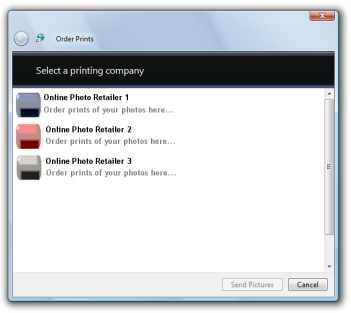

title: Online Printing Wizard description: The Windows Vista Online Printing Wizard helps users order prints of photos from participating online printing retailers. ms.assetid: 1e73a5d0-2ca8-4eca-846a-bd69eee257cb keywords:
The Windows Vista Online Printing Wizard helps users order prints of photos from participating online printing retailers. This wizard is designed so that it can be invoked programmatically by any application that wants to offer users the ability to order prints of photos. The Photo Printing Wizard is available on Windows Vista. PIX for Windows
The Windows Vista Online Printing Wizard enables users to order prints from a selection of participating online printing retailers. When invoked, the wizard:
Any application can benefit from the features offered by the Windows Vista Online Printing Wizard. An application need only pass in the file or files for which prints will be ordered, and the wizard guides the user through the ordering process.
The following figure shows the Windows Vista Online Printing Wizard displaying an example list of participating online printing retailers.

The Windows Vista Online Printing Wizard supports any image file format for which a Windows Imaging Component (WIC) codec is installed. WIC provides several standard codecs, including:
For more information about WIC and WIC codecs, see Windows Imaging Component.
File formats supported by online printing retailers vary from retailer to retailer; it is possible that a particular retailer may not support all of the file formats supported by the Windows Vista Online Printing Wizard. If the user attempts to order prints in a format that is not supported by the selected retailer, the Windows Vista Online Printing Wizard notifies the user that the selected retailer does not support the submitted file format.
To invoke the Windows Vista Online Printing Wizard, call the IDropTarget interface with the following class identifier (CLSID):
CLSID_PublishDropTarget
This CLSID is defined in Shobjidl.h and Shobjidl.idl. The files to be processed by the Windows Vista Online Printing Wizard are specified in an IDataObject object.
The following code example demonstrates how to invoke the Windows Vista Online Printing Wizard.
// A data object that contains the list of photos to print.
IDataObject* pDataObject;
// Create the Photo Printing Wizard drop target.
CComPtr<IDropTarget> spDropTarget;
hr = CoCreateInstance(CLSID_PublishDropTarget,
NULL,
CLSCTX_INPROC_SERVER,
IID_PPV_ARGS(&spDropTarget));
// Drop the data object onto the drop target.
POINTL pt = {0};
DWORD dwEffect = DROPEFFECT_LINK | DROPEFFECT_MOVE | DROPEFFECT_COPY;
spDropTarget->DragEnter(pDataObject, MK_LBUTTON, pt, &dwEffect);
spDropTarget->Drop(pDataObject, MK_LBUTTON, pt, &dwEffect);}
The Windows Vista Online Printing Wizard exports an icon that can be accessed and displayed by applications which call it. The following figure shows the Windows Vista Online Printing Wizard icon.
The following code example demonstrates how to retrieve the index for the Windows Vista Online Printing Wizard icon by reading the OPWIcon property.
// Create the Online Printing Wizard drop target.
CComPtr<IDropTarget> spDropTarget;
HRESULT hr = CoCreateInstance(CLSID_PublishDropTarget,
NULL,
CLSCTX_INPROC_SERVER,
IID_PPV_ARGS(&spDropTarget));
// Get the Online Printing Wizard properties.
CComPtr<IPropertyBag> spPropsBag;
spDropTarget->QueryInterface(IID_PPV_ARGS(&spPropsBag));
// Read the icon index from the properties set.
CComVariant vtIcon;
int nIndex;
hr = spPropsBag->Read(L"OPWIcon", &vtIcon, NULL);
if SUCCEEDED(hr)
{
nIndex = vtIcon.lVal;
}
The Windows Vista Online Printing Wizard defines three properties that are related to the most recently used (MRU) online printing retailer.
| Property Name | Property Value/Function |
|---|---|
| MRUIcon | The index of the icon for the most recently used online printing retailer can be read from this property. |
| MRUName | The name of the most recently used online printing retailer can be read from this property. |
| UseMRU | A VARIANTÂ VT_BOOL value indicating whether the wizard should skip the online printing retailer selection page, and just use the most recently used online printing retailer instead. Set this property to VARIANT_TRUE to skip the retailer selection page. |
Â
The following code example demonstrates how to set the UseMRU property so the Windows Vista Online Printing Wizard bypasses the online printing retailer selection page and automatically selects the most recently used retailer.
// A data object that contains the list of photos to order prints for.
IDataObject* pDataObject;
// Create the Online Printing Wizard drop target.
CComPtr<IDropTarget> spDropTarget;
HRESULT hr = CoCreateInstance(CLSID_PublishDropTarget,
NULL,
CLSCTX_INPROC_SERVER,
IID_PPV_ARGS(&spDropTarget));
// Set the UserMRU property to true to skip retailer selection and use
// the MRU retailer instead.
CComQIPtr<IPropertyBag> spPropsBag(spDropTarget);
if(spPropsBag)
{
VARIANT varTrue = {0};
varTrue.vt = VT_BOOL;
varTrue.boolVal = VARIANT_TRUE;
spPropsBag->Write(L"UseMRU", &varTrue);
}
// Drop the data object onto the drop target.
POINTL pt = {0};
DWORD dwEffect = DROPEFFECT_LINK | DROPEFFECT_MOVE | DROPEFFECT_COPY;
spDropTarget->DragEnter(pDataObject, MK_LBUTTON, pt, &dwEffect);
spDropTarget->Drop(pDataObject, MK_LBUTTON, pt, &dwEffect);
The following code example demonstrates how to read the MRUName and MRUIcon properties.
// Create the Online Printing Wizard drop target.
CComPtr<IDropTarget> spDropTarget;
HRESULT hr = CoCreateInstance(CLSID_PublishDropTarget,
NULL,
CLSCTX_INPROC_SERVER,
IID_PPV_ARGS(&spDropTarget));
// Get the Online Printing Wizard properties.
CComPtr<IPropertyBag> spPropsBag;
spDropTarget->QueryInterface(IID_PPV_ARGS(&spPropsBag));
CComVariant vtMRUName, vtMRUIconIndex;
CComBSTR bstrMRUName;
int nMRUIconIndex;
// Get the MRU name value.
hr = spPropsBag->Read(L"MRUName", &vtMRUName, NULL);
if SUCCEEDED(hr)
{
bstrMRUName = vtMRUName.bstrVal;
}
// Get the MRU icon index value.
hr = spPropsBag->Read(L"MRUIcon", &vtMRUIconIndex, NULL);
if SUCCEEDED(hr)
{
nMRUIconIndex = vtMRUIconIndex.lVal;
}
Â
Â